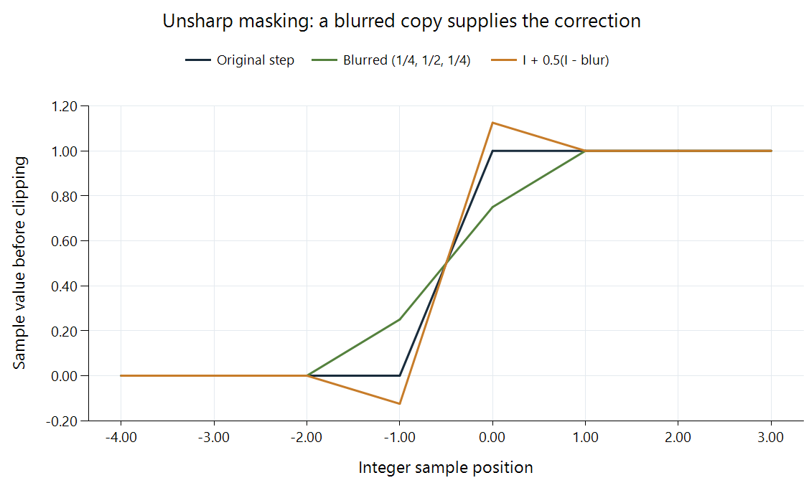

Video Sharpening
A narrow edge can appear more distinct when a processor increases the contrast immediately around it. Sharpening makes that local change. One common construction, unsharp masking, derives a correction from the difference between the original picture and a blurred copy.
If I is the original value, B its blurred version, and a the amount:
sharpened = I + a(I − B).
The name comes from using the unsharp, or blurred, copy as a mask. Subtracting it isolates variations that the blur suppressed; adding a scaled version of that difference reinforces them.

Original one-dimensional example. The blur weights are (1/4, 1/2, 1/4), amount is 0.5, and values are shown before clipping. Lines connect the discrete sample positions for readability.
The correction at a black-to-white edge
Take a source whose integer positions below zero are 0 and whose positions zero and above are 1. Blur each position using one quarter of the previous sample, one half of itself, and one quarter of the next.
The last black position has blurred value 0.25. Its difference I − B is −0.25. With amount 0.5, its sharpened value is:
0 + 0.5 × (0 − 0.25) = −0.125.
The first white position has blurred value 0.75 and difference +0.25. Its sharpened value becomes:
1 + 0.5 × (1 − 0.75) = 1.125.
Flat regions remain unchanged because their blurred values equal their originals. The operation has increased contrast near the transition, producing dark and bright overshoot around it. An appropriate output constraint can clip or limit those values, changing the final edge shape.
This construction explains the appearance of a halo. It is a spatially organized correction beside an edge, rather than a uniform contrast change applied to the entire picture.
Amount and neighborhood affect different features
Amount scales the correction. Doubling it doubles the difference being added in this linear model. A blur neighborhood's width selects the spatial variations used to form that difference.
A small neighborhood tends to emphasize narrower features. A broad blurred copy differs from the original over a wider region, so its correction can create broader outlines around objects. The mathematical blur and its radius matter as much as the amount label.
Some implementations use thresholds or other constraints to avoid amplifying very small differences. Others process luma, chroma, or alpha separately. FFmpeg's unsharp documentation describes component-specific amounts and neighborhood sizes. The diagram's three-sample blur is a deliberately small worked example.
Existing fine variation is reinforced too
The difference I − B contains high-frequency texture and noise as well as useful edge structure. Increasing that difference can make grain more prominent, outline compression defects, or exaggerate a previously created ringing pattern.
If a weak fluctuation survives in the original but is largely removed from B, its correction is close to a times that fluctuation. Adding it back increases the original variation. This is why denoising and sharpening are distinct decisions about the picture's texture, and why their order can affect a combined operation.
Sharpening also depends on the grid where it runs. A neighborhood measured in source samples covers a different displayed extent after a resize. Applying the same nominal radius before and after scaling can therefore emphasize different visible feature sizes.
In an Emby comparison, a server conversion and the app's presentation may each change local contrast. Inspecting the delivered frame before its display enlargement helps determine which stage supplied the visible outline.
Measuring the intended change
Evaluate a narrow genuine edge, fine texture, a gradient, and motion in the decoded final output. A stronger outline can increase the apparent separation of a feature while also changing neighboring values; a still frame alone can understate amplified temporal grain.